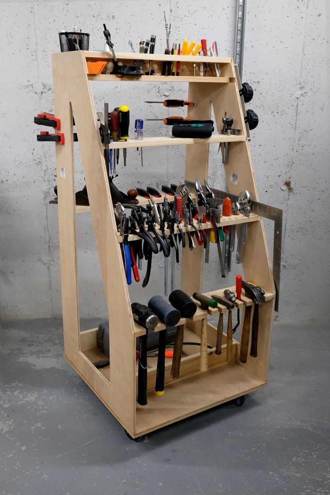

Ladder Tool Cart
2023
When I moved to new house with a new and very empty basement begging to transform into a workshop, I was inspired by Adam Savage's tool cart. His philosophy on the first order of retrievability means that the tools you use most often should be visible and at hand. I've never been a fan of stashing everything away in cabinets and drawers where they go to die. Having designed, built, and used this cart for a few years now, it feels like some kind of cheat code.
